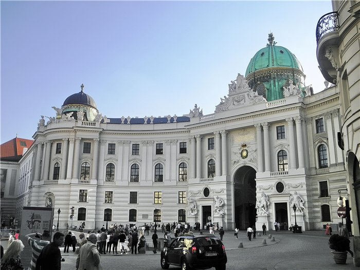
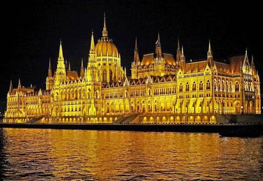
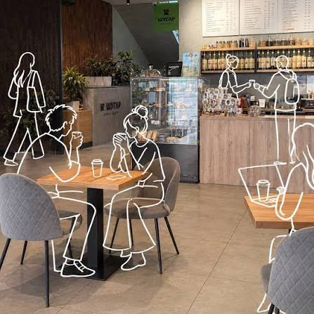

Наш фотоархів
-

Ранкова Прага: тихі вулички, черепичні дахи та перші промені сонця. -

Величні фасади Відня та атмосфера імперської елегантності. -

Вечірній Будапешт, коли мости та палаци відбиваються у воді Дунаю. -

Маленька кав’ярня, де ми планували наступний маршрут нашої подорожі.